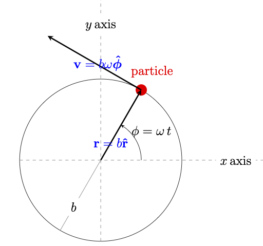
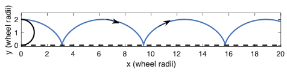
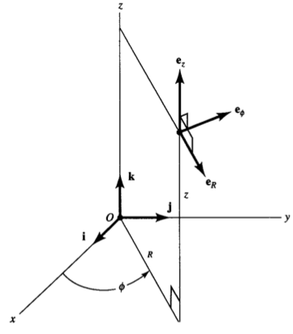
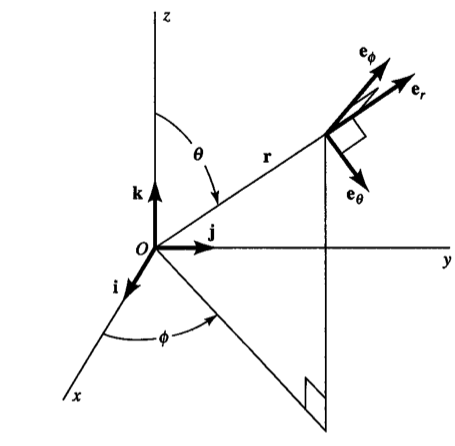

2. Particle Dynamics#
2.1. Vector Functions describing Velocity and Acceleration of a Moving Particle#
In this unit, we wish to quantify the motion of a particle, or a group of particles, which move in response to different types of forces.
To do this, we will use vector functions to represent the position, velocity, and acceleration of particles in different coordinate systems.
We start with the case of Cartesian coordinates, the simplest case. The vector position of our particle with respect to the origin, at some time \( t \), can be written (using bold typeface convention for vector quantity):
where the vectors \( \vec{\hat{x}}, \vec{\hat{y}}, \vec{\hat{z}} \) are unit vectors aligned with the axes of the coordinate system.
The velocity, \( \vec{v}(t) \), of the particle is the rate of change of its vector position with time. To calculate this, we simply differentiate all the individual components in our general expression:
where the prime notation (\( ' \)) indicates taking a derivative of the functions \( x(t), y(t), z(t) \) with respect to time.
What about acceleration? By definition, acceleration \( \vec{a}(t) \) is the rate of change of velocity, so:
These definitions give very simple expressions for motion under constant acceleration. For example, a vertically falling body close enough to the surface of the Earth experiences a constant downward acceleration, \( g \approx 9.8\,\mathrm{m\cdot s^{-2}} \). If we take the downward vertical direction as \( -z \), then
Using subscript notation to indicate vector component, \( a_z = -g \).
If the body is initially at rest (zero velocity) at a height \( h \) above the ground, then dropped, we can integrate the definition of acceleration to find how its velocity evolves with time:
Thus the particle’s velocity increases linearly with time during its fall. To work out how far it falls in the same time interval \( t = 0 \rightarrow t_f \), we integrate the expression for velocity:
The particle’s journey ‘finishes’ when it strikes the ground at \( z = 0 \), at which the corresponding time
2.2. Example: Circular Motion#
Of course, the Cartesian coordinate system is not our only choice for describing particle motion. Other coordinate systems also follow the basic definitions of velocity and acceleration, however, the corresponding expressions may look a little different in coordinate systems where the unit vectors are locally defined – in other words, where the coordinate unit vectors may change direction as the particle moves.
A simple example of this is a particle executing circular motion in the Cartesian \( xy \)-plane. If the particle moves on a circular path of constant radius \( b \), then we may specify its position using two Cartesian coordinates which are themselves functions of time:
where the constant \( \omega \) is the angular velocity of the particle. \( \omega = \frac{2\pi}{T} \), where \( T \) is the period of the motion.

Equivalently, we could use the single angular coordinate \( \phi = \omega\,t \) to trace the particle position.
In a general polar coordinate system, \( \phi \) is the angle between the particle’s position vector and the \( x \)-axis; and the radial distance \( r \) from the origin specifies the second coordinate needed to specify any position in the two-dimensional plane. In this simple example, \( r \) is held constant at value \( b \).
The polar coordinate unit vectors point locally in the direction of maximum increase in those coordinates. Thus, unit vector \( \vec{\hat{r}} \) points radially outwards from the origin at the position of our particle; while unit vector \( \vec{\hat{\phi}} \) points along the local direction of rotation of the particle, at the particle’s position. Both of these unit vectors execute one full rotation for one period of the motion – that is, a time interval of duration \( T = \frac{2\pi}{\omega} \), during which \( \phi \) changes value by \( 2\pi \).
If we choose to use these unit vectors for calculating velocity and acceleration in polar coordinates, we commence with the position of the particle, which, by definition, is:
We have to differentiate the full vector function \( \vec{r}(t) \) to get the velocity. \( b \) is constant with time, but the radial unit vector is not – it changes direction, according to:
We introduce the unit vector \( \vec{\hat{\phi}} \) in the final step, as we identify it with the unit vector in the previous line, which is always orthogonal to \( \vec{\hat{r}} \) and which always points along the direction of motion of the particle. Thus we have:
Furthermore, for the acceleration, we see that we need to differentiate \( \vec{\hat{\phi}}(t) \) with respect to time, as follows:
And so, our expression for acceleration becomes:
which always points towards the centre of the rotation (i.e., the origin, in this example), and has a magnitude \( b\omega^2 = \frac{v_{\phi}^2}{b} \), where the uniform rotational speed \( v_{\phi} = b\omega \). This type of acceleration, associated with rotational motion, is known as centripetal acceleration. Because it acts perpendicularly to the direction of motion, it changes the particle’s direction, but not its speed.
2.3. Example: Rolling Wheel#
Consider a point on the moving rim of a rolling wheel of radius \( b \). Let the position of this point be at a height \( 2b \) above the ground (i.e., uppermost point on the rim) at time zero. As time proceeds, the position of the center of the wheel can be described by:
where the center of the wheel moves in the \( x \)-direction at a speed given by one wheel circumference unrolling along the ground per rotational period, or \( \frac{2\pi\,b}{\frac{2\pi}{\omega}} = b\,\omega \). We have assumed that the wheel lies in the \( xy \)-plane during its motion.

Our moving point, in a frame of reference where the wheel center is stationary, has a position at time \( t \), relative to the wheel center, given by:
The complete position vector of our ‘rolling point’ is thus:
Differentiating once with respect to time gives the velocity of the moving point:
Note that, for times when \( \omega t = 0, 2\pi, 4\pi, 6\pi, \dots \), when the point is at the uppermost location on the wheel, the velocity is of magnitude \( 2\omega b \) in the \( x \)-direction – that is, the point is instantaneously moving at twice the velocity of the moving center of the wheel.
On the other hand, for times when \( \omega t = \pi, 3\pi, 5\pi, \dots \), when the point is in contact with the ground, its instantaneous velocity is zero.
Differentiating again with respect to time gives the acceleration of the moving point:
We recognize that this acceleration is always directed from the moving point towards the center of the wheel at all times, and is of magnitude \( b\omega^2 \).
2.4. Velocity and Acceleration with Three-Dimensional Spatial Coordinates#
When we consider particle motion in three dimensions, logically we need three coordinates to specify vector quantities such as position, velocity, and acceleration. The general relationships still hold – for example, velocity is the rate of change of position with respect to time. In this section, we extend some of the ideas from the previous section to derive appropriate formulae for these quantities in the cylindrical and spherical coordinate systems for three-dimensional space.
2.5. Cylindrical Coordinates#
An illustration of cylindrical coordinates and associated, locally defined unit vectors is shown in the figure below. The three coordinates are: \( R \) (cylindrical radial distance), which is the perpendicular distance of the point of interest from some reference axis (here chosen to be the Cartesian \( z \)-axis); \( \phi \), the azimuthal angle between the \( x \)-axis and the projection of the position vector onto the \( xy \)-plane; and \( z \), which is identical to the usual Cartesian \( z \)-coordinate.

Now, the position vector of any moving particle with respect to the origin can be expressed, using the corresponding (locally defined) unit vectors in this system, as:
The unit vector \( \vec{e_R} \) will change direction as the particle moves, since it is parallel to the direction from the closest point on the \( z \)-axis to the position of the particle itself. On the other hand, the unit vector \( \vec{e_z} \) will not change with the particle motion.
We can thus use similar calculations as were done in the previous section to prove that:
where we have used the `overdot’ notation to denote time derivative, \( \dot{\phi} = \frac{d\phi}{dt} \).
Using this same notation now to calculate the velocity in cylindrical coordinates:
The cylindrical components of the above equation represent the cylindrical radial velocity, the azimuthal velocity (equivalent to a local rotational component of motion about the \( z \)-axis), and the axial velocity.
Differentiating the azimuthal unit vector \( \vec{e_{\phi}} \) with respect to time, using similar reasoning as for equation \( \frac{d\vec{e_{\phi}}}{dt} \), gives us:
If we now use this result and the equation for \( \frac{d\vec{e_R}}{dt} \) when we differentiate velocity (equation \( \dot{\vec{r}} \)) to get acceleration, we arrive at (proof is left for the reader as an exercise):
We can identify the term \( -R\,\dot{\phi}^2\,\vec{e_R} \) in this expression as the centripetal acceleration associated with that component of the motion which represents rotation about the \( z \)-axis.
2.6. Spherical Coordinates#
In this section, we repeat the same general strategy for deriving formulas for velocity and acceleration in the spherical polar coordinates for three-dimensional space. We remind ourselves, from the previous section, that this strategy involves expressing the local unit vectors of our coordinate system in a form that is relatively straightforward to differentiate — the Cartesian form of these vectors is a good choice here. Differentiation then allows us to express the time derivatives of each of our local unit vectors in terms of other unit vectors in the triad, which in turn allows us to make final derivations of the spherical polar implementations of velocity and acceleration of a moving particle. Note that the vectors which we obtain for a particle’s velocity and acceleration ultimately must have the same final magnitude and direction in all coordinate systems. However, the different orientations of unit coordinate vectors in these different systems mean that the individual components of acceleration and velocity are indeed dependent on our choice of coordinates.

Illustration of spherical coordinates and unit vectors (from the book by Fowles and Cassiday).
With these concepts in mind, we now turn to the spherical polar coordinate system, whose position coordinates and local unit vectors are illustrated in Figure. We see that in this system, the three quantities which now specify a particle’s position are: \(r\), its radial distance from the origin; \(\theta\), the polar angle which is the angle between the \(z\)-Cartesian axis and the position vector of the particle; \(\phi\), the azimuthal angle, which is the angle between the \(x\)-axis and the projection of the position vector onto the \(xy\)-plane. If we express these unit vectors in the Cartesian components, we obtain:
As usual, these unit vectors point along the local direction of maximum increase of the corresponding position coordinate.
Taking the general time derivative of the radial unit vector (assuming that both \(\theta\) and \(\phi\) are functions of time along the particle trajectory):
Note that these expressions have geometrical meaning. For example, if a particle moves such that its \(\phi\) coordinate does not change, and it only increases its coordinate \(\theta\), following a circular path of constant radial distance \(r\), then in a time \(\delta t\), the incremental change in the radial unit vector `carried along’ with the particle would be of magnitude \(\dot{\theta}\,\delta t\) and of direction parallel to the maximum-rate direction of increasing \(\theta\), i.e., parallel to \(\vec{e_{\theta}}\).
We now have enough information to evaluate all the terms (scalar and vector derivatives) needed in the definition of velocity:
Similar calculations to those which led to the above equation for the other unit vectors (proof left to the reader) give:
Finally, we can obtain the spherical polar components of acceleration by differentiating the velocity equation:
Collecting terms corresponding to each component of the acceleration vector, this expression simplifies to:
2.6.1. Example 1 - Circular Orbital Motion#
We may consider the following simple example of describing motion in spherical coordinates. A particle of mass \(m\) follows a circular orbit of constant radius \(r_0\) with respect to the center of a spherically symmetric planet of mass \(M\). For simplicity, we consider part of such an orbit where \(\phi\) is constant. The only force on the orbiting particle is in the radial direction towards the planet center, and has magnitude \(\frac{GMm}{r_0^2}\), where \(G\) is the classical gravitational constant. In vector notation, the force is \(\vec{F} = -\frac{GMm}{r_0^2}\,\vec{e_r}\), and so the acceleration is \(\vec{a} = \frac{\vec{F}}{m} = -\frac{GM}{r_0^2}\,\vec{e_r}\). But we know from our general acceleration formula that the radial acceleration must also be equal to:
Hence:
which means the particle has constant angular velocity and completes one orbit in a time given by:
This is a simple example of one of Kepler’s laws of gravitational motion. Note that the conditions of constant \(\dot{\theta}\) and constant \(\phi\) for this simple example confirm that \(a_{\theta}\) and \(a_{\phi}\) indeed evaluate to zero, as required.
2.6.2. Example 2 - Elliptical Motion#
This problem comes from Chapter 1 in the book by Fowles and Cassiday. A small ball is fastened to a long rubber band and twirled around in such a way that the ball moves in an elliptical path, given by the equation:
where \(b\) is a constant. For this motion, we wish to calculate the acceleration at any point along the elliptical path.
First, we find the first and second derivatives of \(\vec{r}(t)\):
Hence, the acceleration vector is given by: